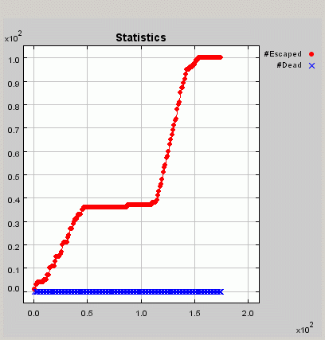
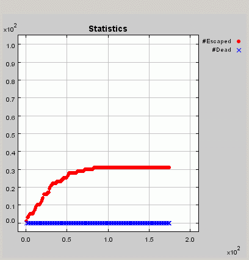
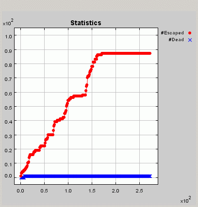
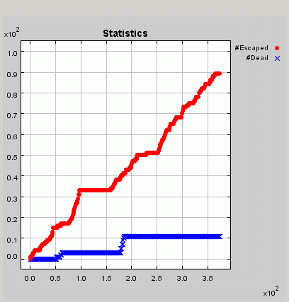
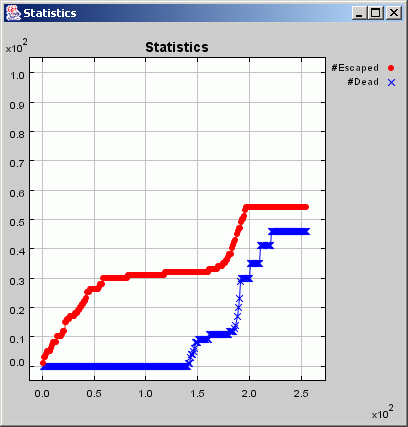

A Fire Escape Model with Flexible Agent Rules
By Laszlo Gulyas, Scott Moser, and Jason Woodard
July 16, 2003
1. Introduction
The primary goal of our model was to produce realistic agent behavior
using simple rules that might be generated by an adaptive process. In our
experiments, we focused on the relationship between agents’ range of perception
(“vision”) and their collective ability to escape the fire. We found that
20/20 vision can be both a blessing and a curse: a blessing, of course,
because highly perceptive agents are more likely to be able to locate an
escape route; a curse because crowding and herd behavior may lead agents
into danger as they stampede toward an exit on the other side of it. Moreover,
intermediate levels of vision can lead to disaster, as explained below.
2. Model
We made the following assumptions.
2.1 Topology and Physics
There are two primary ingredients to the model: the room in which
the “action” takes place, and the agents that act and react in the room.
We assume a square room in which agents, doors, fires and obstacles may
be located on a square lattice. This geometry is not endemic to the model;
we could equally have used a hexagonal lattice, for example. The room is
bounded by a wall and contains several doors, fires and obstacles. Each cell
may contain only one object.
The room also contains agents, which may move to a neighboring cell on
the lattice at a rate of at most one cell per time step. Agents’ decisions
are simultaneous, which we implemented using a double buffering scheme.
Only one object may occupy a cell at a time. Agents may not move to a space
occupied by a wall. Moving to a space occupied by fire is fatal.
2.2 Agent Perception and Actions
Agent behavior is governed by one of two modes. In “normal mode,” agents
move according to a random walk. In “emergency” mode, agents move according
to the decision rule described in the next section. Agents have limited
vision, defined by a perception parameter for each agent, which is simply
the maximal distance at which the agent may observe objects in the room.
As we will see, the range of vision will play a key role in the behavior
of the agents.
An agent enters “emergency” mode when it sees a fire or another agent in
emergency mode. (We assume an agent’s state is transparent to the other
agents.) Once in emergency mode, the agents attempt to avoid the fire and
escape the room.
2.3 Decision Rules
In emergency mode, agents react to the information available them with
the goal of exiting the room as quickly as possible without touching the
fire. In each time period, each agent perceives its neighborhood, obtaining
the following information about the cells in its range of perception:
- Existence and state (mode) of other agents.
- Existence, direction and distance to the nearest cell occupied by fire,
doors, and walls.
- Average direction of movement of the neighboring agents.
- “Confusion,” a random noise component.
Each component of the information an agent has available can be represented
as a vector. Given this information, an agent transforms and aggregates the
information vectors to choose its action. For example, given the direction
of the fire and the direction of the door (if both are in the agent’s perceptual
range), a sensible decision rule might be “move away from the fire and toward
the door.” The generality of these decision rules allows for the exploration
of emergent decision rules, though the evolution of such rules is not implemented
here. For the experiments we performed, agents aggregated information in the
following way: agents go toward the door, away from the fire, and in the
general direction of the neighboring agents, all having equal weight. In
addition, there is a stochastic element to the decision rule: a random vector
is incorporated into the agent’s action with equal weight to the other factors.
In addition to the agent decision rules, there are physical constraints
enforced by the model. For instance, if a move is invalid (if an agent attempts
to walk into wall, for example), the agent moves to a random unoccupied adjacent
cell if possible; if this is not possible, the agent does not move.
3. Results
Our results are mainly qualitative, but informal exploration leads us
to believe that they are repeatable and robust to some degree of variation
in the model parameters.
3.1 Perfect vs. Limited Vision
Our first experiments focused on the effect of different ranges of vision.
In all of these runs, the room consisted of a 50x50 square grid with walls
on the boundaries, and a 4 cell-long exit on the top-left corner. The fire
occupied a small 2x2 square in the middle of the room and the agents were
initially randomly located. The experiments had 100 agents instead of the
20 prescribed by the problem description. The reason for this choice was
to improve the “visibility” of the results, but the phenomena were qualitatively
similar in the case of 20 agents, too.
Perfect Information
Granting the agents enough vision to see across the room from one corner
to the other resulted in most agents escaping the fire, as shown in
Movie 1
.
The yellow dots represent walls, the green ones stand for the door,
while the red ones for the fire. Agents are represented with either white
or blue dots, depending on of their awareness of the fire. The time series
graph plots the number of agents who managed to escape and the number of
deaths against time.
It seems clear from the movie that the agents’ ability to see the exit
from any location in the room helps them to take an efficient path toward
the door. However, once near the door the behavior becomes less determinate.
Part of this is due to crowding; part may also result from the loss of precision
that occurs when converting the real-valued directional vectors into discrete
steps on the lattice.
A look at
Chart 1
also tells us that some agents die, which happens when they step on
a cell on fire. That is, some agents march right through the fire, when
their aim to the exit and their urge to herd take over their aversion to
fire.
Limited Information: Low Vision
The runs reported in Movie 2
and
Chart 2
were carried out with the same parameters as above, except that the
agents’ vision was set to 10. This means that their moves were based on
information from a (2*10+1) x (2*10+1) “window” around their current location.
Naturally, agents located in corners of the room had even less information
to use for their decisions.
This limited amount of information, however, did not prevent the agents
from escaping successfully. Indeed, all of them managed to safely
reach the exit, and, as testified by the time series graph, this time without
casualties. The reason for this is that not being able to see the exits,
their aversion to fire balanced their urge to follow the crowd.
Limited Information: Middle Vision
In the last two sections we saw that agents operate well under conditions
of both full information and constrained vision. Now, let’s see what happens
if we endow the agents with an intermediate level of vision. The simulations
reported in Movie 3
and
Chart 3
were carried out with the same parameters as in the two above runs,
except for the vision, which was set to 25. That is, an agent located in
the middle of the room could see all the objects in it, but the farther
away from the center it moved, the fewer objects that were visible.
The outcome of the simulation is somewhat surprising. The majority of
the agents fail to escape the room. Instead, they crowd in the three corners
without exits. (More precisely, they crowd in all corners, but the
ones happened to be close to the exit leave the room easily.) While the fire
does not spread in our model, and thus these agents technically survive,
we consider this behavior as failure, since the behavioral goal of the agents
was to find the exit; one could also say that these agents will eventually
die of smoke poisoning.
The reason for the failure is that the agents in the corner cannot see
the exits, so the only other applicable rules are to follow the crowd and
avoid the fire. Since the ones a little bit off the corner can actually
see the fire, they tend to move towards the corner, yielding an average crowd
direction that prevents others escaping from it.
Limited Information: Low to Middle Vision
The suprising results of the previous section told us that under special
conditions, it may actually be more beneficial to know less. To underscore
this point, we report on another run, where the vision of the agents was
uniformly distributed between 1 and 25. That is, the most knowledgeable agents
had the same level of information as in the previous section, but there were
also agents who knew less.
As the results in Movie 4
and
Chart 4
show, having lower vision actually helps. A majority of the agents escape
the room, leaving only a few of them behind. It can be seen that the agents
start to crowd in the corners as before, but then they gradually pull out
and find alternative routes. The reason for this is that having fewer agents
that can see the fire from near-corner locations changes the average direction
of the crowd.
3.2 Coordination and Crowding
The main lesson from the experiments so far is that the range of vision
affects the agents’ performance, sometimes in a counterintuitive way. We
want to emphasize another, more obvious, aspect of these results that we
have not yet discussed, namely that in most cases the agents show coordinated
behavior. In particular, they tend to move in groups. Also, they seem to
move in ways that resemble “meaningful” searching behavior. (Recall especially
Movies 2 and 4.) These patterns are not surprising, as we designed the behavioral
rules to generate them, but it is still gratifying to see them produced.
Furthermore, in some cases we observe crowding—another phenomenon to
be expected in a highly populated room on fire. Movie 1 shows this effect,
although it is partly due to the discretization of directions, as mentioned
above. The effect is more pronounced in the part of Movie 2 when the “last
group” of agents gets to the door. Here agents can be seen clearly to pile
up at the door, temporarily unable to get out.
To demonstrate this point even further, we ran another simulation, with
the parameters of the run shown in Movie 2, except that we limited the
size of the exit to a single cell in the top-left corner of the room. The
results of this run can be seen in Movie 5
and
Chart 5
.
It is clear that the smaller size of the door forces the agents to wait
at the exit. The effect is reienforced by the fact that the size of the
door does not affect the agents’ ability to approach the exit, but only
prevents them from taking the final escaping step. We believe that this
can serve as a primitive model of stampedes as well, except that we don’t
explicitly model death brought on by fellow agents.
Movie 5 displays another piece of novel behavior. What happens is that
the agents that are forced to wait at the exit eventually grow “inpatient”
and continue their search. There not being any other way of escape, they
finally get back to where they were before, and crowd again, eventually
all of them getting out. Leaving the jammed exit to explore elsewhere seems
fairly realistic, and can even be seen as rational. On the other hand, the
full circle this “impatient” group of agents makes around the circle is a
bit strange. While one could try to interpret it as “panicking,” it may be
more accurately described as an undesirable artifact of the agents’ decision
rules.
3.3 Other Experiments
We experimented with several other aspects of the model also.
Input Weights
We tried different weights for the perceptual inputs before settling
on a uniform weighting. Extreme values made a difference but did not
seem particularly natural, while a range of intermediate values produced
qualitatively similar behavior. We still believe it would be interesting
to evolve these rules, but did not see further benefit to hand-tuning them.
Alarm Propagation
We included a separate parameter governing the ability of agents to perceive
each other’s state. Under low values of this parameter, news of the fire
spreads slowly. A high value simulates the effect of an alarm bell that rings
when the fire starts and is heard immediately by all agents. Although very
low values did affect the pattern of agent behavior (especially under higher
values of the main perception parameter), the effects diminished rapidly
under higher values. We decided not to explore the low-value case more extensively,
as it seemed unnatural to imagine that agents would be less able to perceive
other agents’ distress than other aspects of their environment.
Fire Spreading
We also tried allowing the fire to spread. This did not seem to affect our
basic results, but did allow some agents with middle-range vision to successfully
escape. See Movie 6
and
Chart 6
.
4 Future Directions
Clearly there is much more one could do; a very partial list follows.
- Environmental details. Different topologies, door locations,
fire spreading patterns; additional obstacles.
- Decision rules. Evolve or adapt using a genetic algorithm
or classifier system; allow rules to be context-dependent (e.g., weight
for fire rule could be higher when closer to fire).
- Agent goals. Allow agents to pursue multiple goals (e.g.,
firefighting, rescue) in addition to escape; explore tension between and
selection among them.
Figures

Chart 1 | back

Chart 2 | back

Chart 3 | back

Chart 4 | back

Chart 5 | back

Chart 6 | back
Source Code
Our code, written in Java
using the RePast
agent-based modeling toolkit, is available here
.